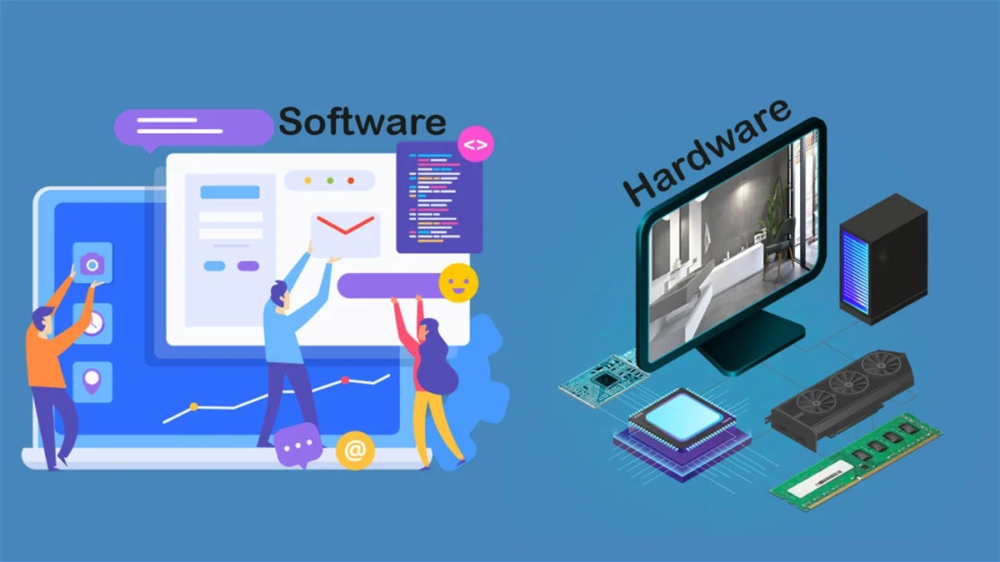
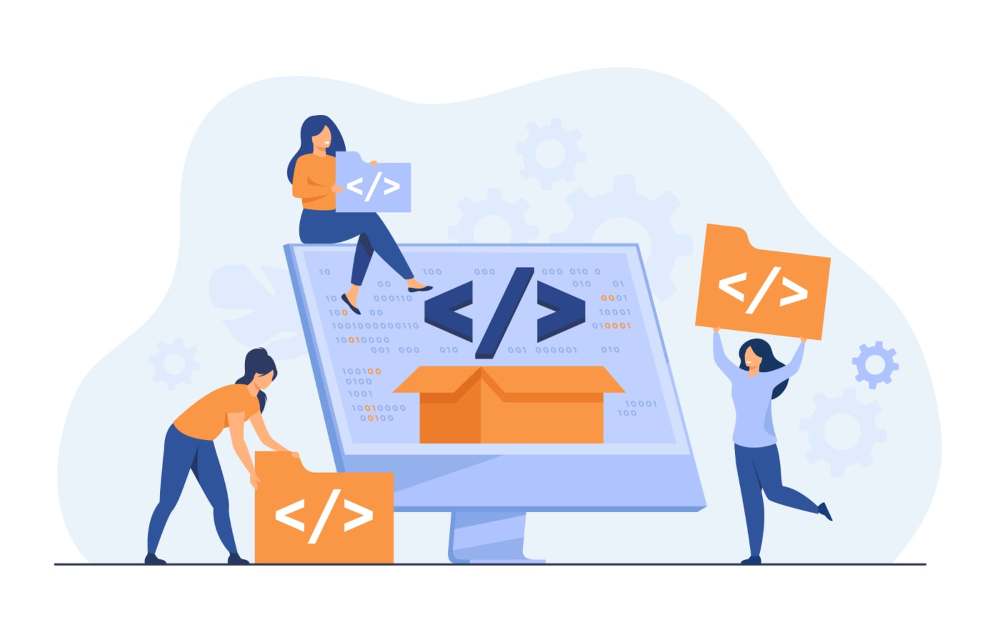

Proyectos
Desarrollo de software a medida: Creación de aplicaciones personalizadas para satisfacer las necesidades específicas de los clientes.
Diseño y desarrollo web: Creación de sitios web atractivos y funcionales para empresas y organizaciones.
Implementación de sistemas de gestión empresarial (ERP): Integración de software para gestionar eficientemente los procesos internos de una empresa.
Desarrollo de aplicaciones móviles: Creación de aplicaciones para dispositivos móviles (iOS, Android) para empresas o productos.
Consultoría en tecnología: Asesoramiento a empresas sobre las mejores prácticas y soluciones tecnológicas para sus necesidades.
Seguridad informática: Implementación de medidas de seguridad para proteger los datos y sistemas de una empresa contra amenazas cibernéticas.
Virtualización y computación en la nube: Implementación de soluciones de virtualización y almacenamiento en la nube para mejorar la eficiencia y la escalabilidad de los sistemas informáticos.
Desarrollo de sistemas de inteligencia artificial y machine learning: Creación de sistemas inteligentes que pueden aprender y adaptarse para mejorar procesos empresariales.
Servicios
Mantenimiento de sistemas informáticos: Soporte técnico continuo para garantizar el funcionamiento óptimo de los sistemas y la resolución de problemas.
Gestión de redes informáticas: Configuración y mantenimiento de redes locales y corporativas para garantizar la conectividad y la seguridad.
Servicios de alojamiento web y dominios: Ofrecimiento de servicios de alojamiento web y registro de dominios para clientes que deseen tener presencia en línea.
Formación y capacitación en tecnología: Impartición de cursos y talleres para mejorar las habilidades tecnológicas de los empleados de una empresa.
Desarrollo de estrategias digitales: Ayuda a las empresas a desarrollar estrategias efectivas para aprovechar al máximo las tecnologías digitales en su negocio.
Análisis de datos y business intelligence: Extracción de información valiosa a partir de grandes conjuntos de datos para ayudar a las empresas a tomar decisiones informadas.
Auditorías de seguridad informática: Evaluación de la seguridad de los sistemas informáticos y recomendaciones para mejorarla.

